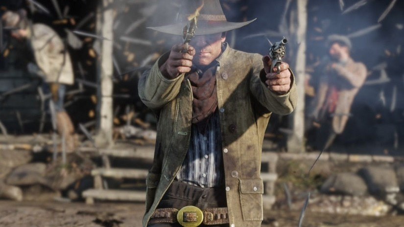

Home

Image provided from Reddit.com
Welcome to 'A Fistful of Tips', the place where you can gather beneficial snippets of information, to help you in the open-world western game, 'Red Dead Redemption II'. Here, you will be given a tour of secrets that the game has to offer. From refrences to film, myths, litreature and previously developed Rockstar games, under the 'Easter Eggs' page. To the locations of rare weaponry in the 'Weaponry' page, and a broad range of minute tips, sectioned off in the 'General' page. To clarify to people who has not completed the main story, this website is:
SPOILER FREE!